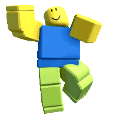

Caitlyn Vu
Caitlyn Vu

Hello! My name is Caitlyn Vu and I'm majoring in Business Management Information Systems (MIS) with a minor in Digital Media Arts (DMA). This semester (Spring '25) has been challenging as I took on 21 units. However, this minor has given me the opportunity to express myself through creative coding. My career goal is to work within web design or the UI/UX field. Feel free to look around!
{Project 1}
Above is the direct link to view my Project 1 which ultimately explores different algorithms witin p5.js. This page contains two exercises as well as the final project that incorporates what I've learned.
{Project 2}
Above is the direct link to view my Project 2 where I expanded my knowledge on alogrithms by creating animations. Similar to Project 1, there are two exercises and a project that incorporates what I've learned.
{Mini Project 3}
Above is the direct link to view my Mini Project 3. Unlike the previous projects, this page only includes one exercise where I explore data and grid array mapping.
{Project 4}
Above is the direct link to view my Project 4. Within, there is one exercise that is later a part of the final project. Here, I explored different p5 libraries and integration sketching.